1. The 5-second test
I understood “interactive live match companion,” not “a place where I can actually watch the broadcast.” The headline “The live match, woven as it happens” is intriguing; the paragraph explains side, score call, crowd and keepsake. That is enough to decode the concept, but it takes reading. Given my friend’s “come watch it with me,” I initially expected video or at least a conventional live commentary. The screen should explicitly say “a second screen for the match” or “keep the broadcast on; this is the crowd and programme beside it.”
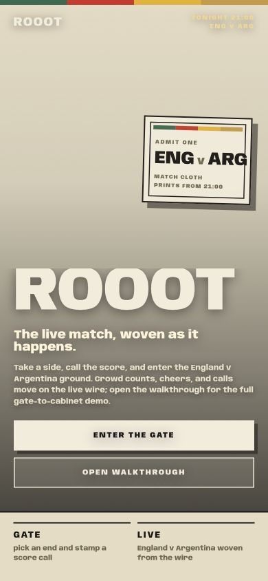

2. Getting in
Bounce risk The welcome becomes a wall at the first tap. “Enter the Gate” and “Open Walkthrough” both change the URL, briefly obscure the page, and return me to the same front door with no error. Once I manually reach the gate, the experience improves sharply: one card, two obvious steps, large targets, decisive selected state.
The gate still makes me infer too much. Score boxes increment but offer no minus or reset. “How sure?” has no explained effect. “The market reads / live wire waiting” sounds authoritative but gives no recovery or expectation. The disabled-looking “Take your place” button only becomes active after choosing a side, but the required order is not stated.
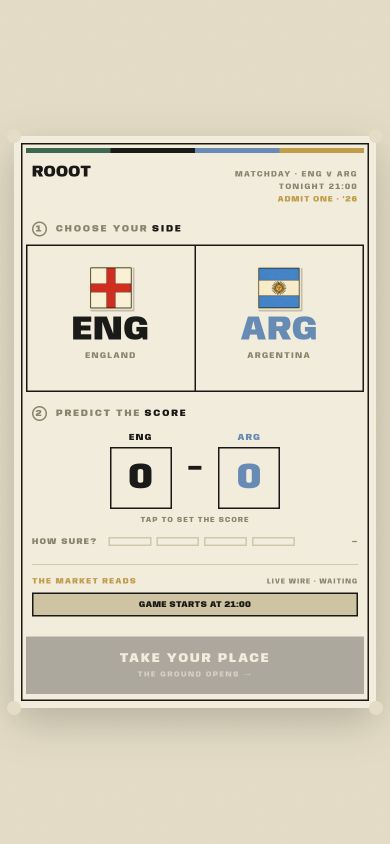
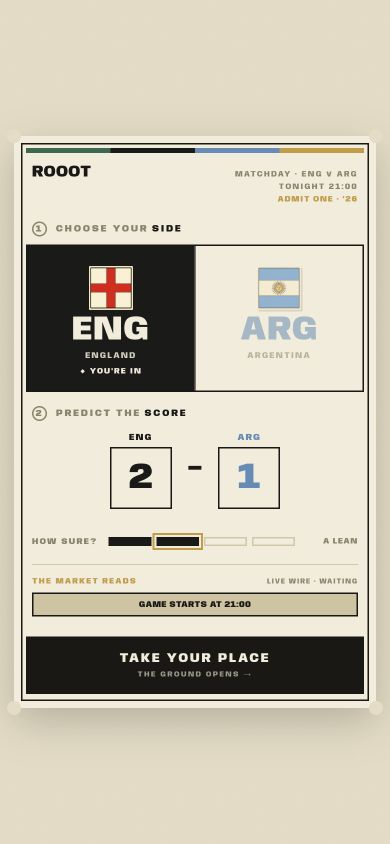
3. The main event
It currently competes with football more than it supports it. The ground opens with a next-goal prompt over crowd prediction, market, two supporter ends, a cheer mechanic, three view tabs, cabinet, seat metadata, score and clock. On a phone, this is too many simultaneous ideas. A lurker should get score, minute, one meaningful visual and ambient crowd first; prompts and analysis can surface progressively.
Trust is the larger problem. I saw 0–0, then 1–2 at 101′ and full time within seconds. I never experienced a goal. The crowd panel said “from 1 prediction” and “100%” with an average of 1.0–0.0, while my saved prediction was 2–1. Later, “you + 6,” “6 here,” “cheers 0,” and “minutes watched 0” coexist. I cannot form a stable model of what is live, what is mine, and what is everyone else’s.
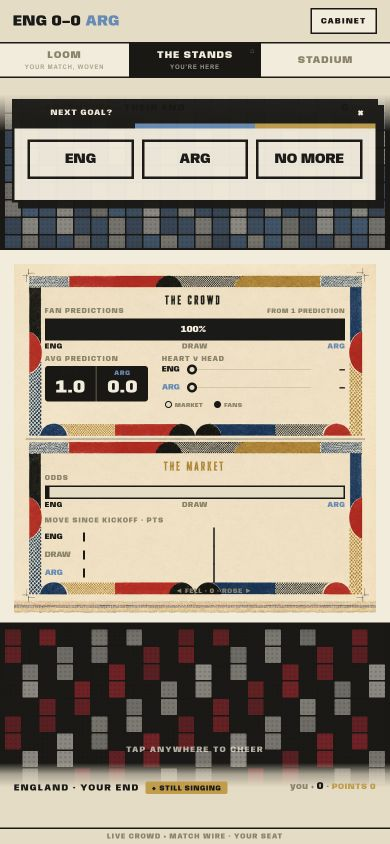
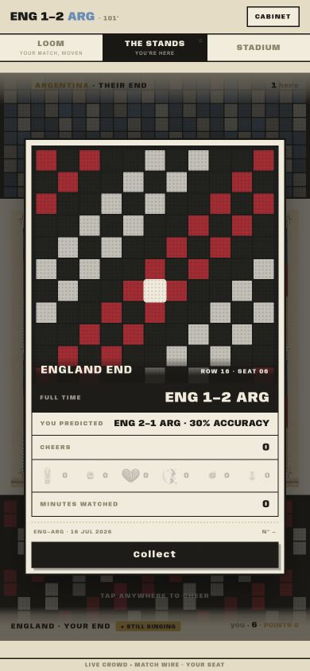
4. What it asks of me
The side choice is obvious and satisfying. The score call is legible, though the tap-to-increment mechanic is slow to correct. Confidence feels like survey garnish because no later screen tells me how it affected anything. “Next goal?” arrives too early and visually behaves like a modal interrupt. “Tap here to cheer” did not produce visible feedback; the footer remained “quiet.” That turns the core emotional action into busywork.
The stadium’s hotspots are the opposite: not obvious enough. The pitch illustration invites exploration, but the circles are unlabeled until tapped. During a match I would not hunt for the difference between “control,” “the book,” “the market,” and “set pieces.” Once opened, though, the cards are excellent pieces of sports information design.
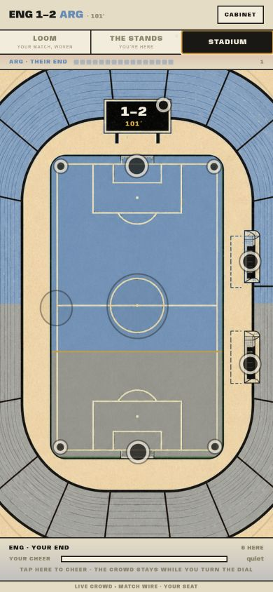
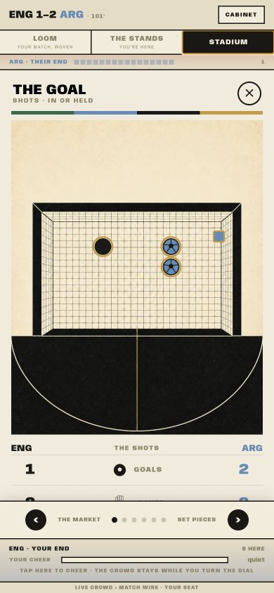
5. The payoff
The idea is strong enough to bring me back: a match becomes a scarf/card/pin record of the night. The execution currently breaks the promise. “Collect” stays on “Collecting… a few seconds,” never resolves, and produces a console error. The cabinet then shows three empty scarf slots and says “your first match awaits,” while a card directly below records the match. “Sample shown until wired” exposes implementation status inside the fan experience.
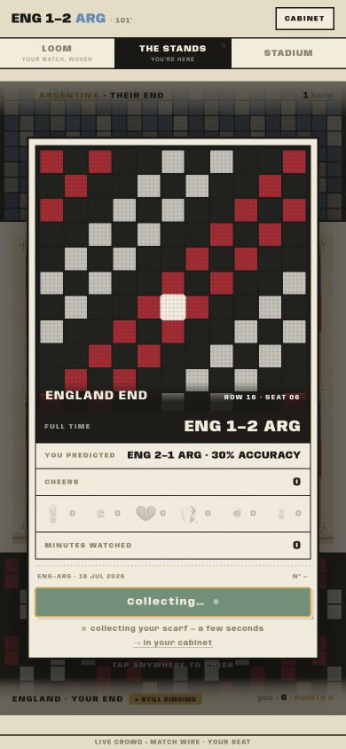
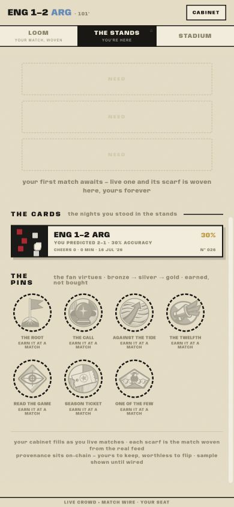
6. “Together”
The product gives me a crowd, not my friend. I can see anonymous quantities—“6 here,” “you + 6,” a prediction count—but no friend identity, shared room, invitation context, side choice, prediction, cheer, reaction trail or post-match comparison. My friend’s role ends when they send the link.
The missing minimum is not chat. It is a friend-aware deep link and presence layer: “Maya invited you · she’s in the Argentina end,” a small shared reaction trail, and a post-match two-person recap. That would make the existing crowd mechanics emotionally legible without turning the app into another group messenger.
7. Craft
Where it sings: the paper, ticket, cloth and screen-print language is unusually coherent. The palette feels like a programme, not a betting product. Selected states have weight. The goal-mouth and set-piece cards turn data into objects worth looking at. The tone—“take your place,” “your end,” “woven from the match”—has ownership and atmosphere.
Where it is rough: tiny uppercase copy and wide tracking become illegible at 390px. Faded beige-on-beige metadata lacks contrast. The top tabs and labels clip at the edges. Fixed header/footer chrome starves overlays of vertical space. Full-page black wipes fire on small taps and look like rendering failures. The loom is mostly a huge near-empty red/grey field with cryptic minute marks; it asks for interpretation without providing a key. The writing shifts from evocative (“yours, forever”) to system/prototype voice (“live wire waiting,” “sample shown until wired”).
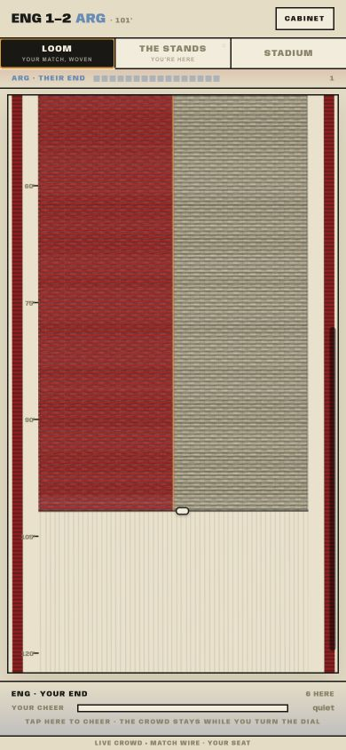
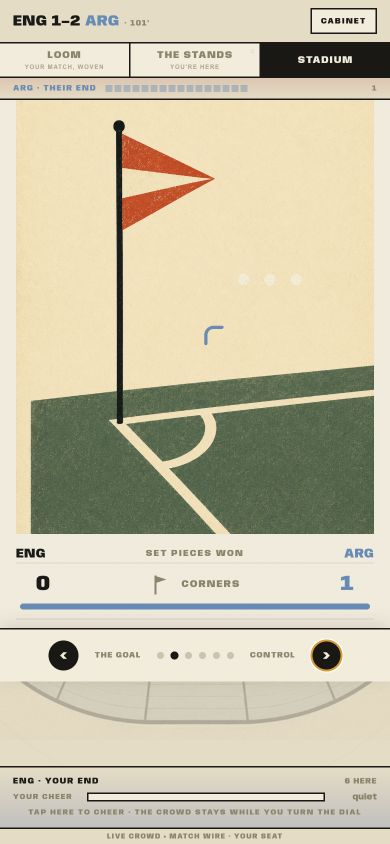
8. Friction log
- Both front-door links return me to the landing page after a dark transition.
- No error or alternate route is offered when entry fails.
- The product never clearly says it is a second screen, not the broadcast.
- Score inputs only increment; correction/reset is undiscoverable.
- “How sure?” has no explained benefit or later payoff.
- “Live wire · waiting” does not tell me whether anything is wrong.
- Next-goal prompt blocks the ground before orientation.
- Replay skips from kickoff to full time too quickly to follow.
- Crowd average contradicts the prediction shown at full time.
- “you + 6” and “6 here” do not explain who or what is counted.
- Cheer tap produces no visible change; status stays “quiet.”
- Full-time card reports zero minutes and zero cheers despite presence.
- 30% accuracy has no visible calculation or interpretation.
- Collecting never resolves and offers no retry.
- Cabinet says first match awaits while showing one match lived.
- No scarf appears after the scarf collection action.
- Prototype copy (“sample shown until wired”) is fan-visible.
- Stadium hotspots are unlabeled and not semantically button-like.
- Small uppercase metadata is difficult to read.
- Fixed chrome clips content and weakens overlays.
- No friend identity, room, presence or shared recap exists.
9. Verdict
Stay to full time? No. I would sample the visual novelty, then return to the broadcast or group chat. The live experience asks for attention without giving me a reliable shared story of the match.
Come back next match? Not yet. The cabinet could become a reason, but the collection failure and contradictory empty state tell me the memory is not dependable.
Invite someone? No. I cannot explain what we would do together beyond seeing anonymous crowd numbers. The friend-specific loop is the central missing product feature, not a polish item.
10. Top fixes, ranked
- Front door — make every invite deep-link reliably into the match. Fix the gate and walkthrough routes, preserve inviter/match context, and show a human recovery state. Nothing else matters if the first tap loops.
- Ground — establish one trustworthy match timeline. Pace the walkthrough through kickoff, goals and full time; reconcile score, minute, crowd prediction, my prediction, presence, cheers and watched time. Trust is the product.
- Full time + cabinet — make collection atomic and explicit. Show pending, success or recoverable failure; then render the actual scarf immediately. Remove all prototype copy and contradictory empty states.
- Invitation + stands — design friend presence. Add inviter identity, shared match room/deep link, friend side/prediction/reactions and a two-person full-time recap. This converts “crowd” into “with my friend.”
- Live views — reduce simultaneous demands. Default to a calm score/crowd view, defer next-goal and market detail, label stadium stations, explain confidence and cheer feedback, and remove heavy black wipes from microinteractions.
Top 3 delights
- The gate’s selected-side transformation. England turning into a solid black panel with “you’re in” feels like taking a real place, not toggling a filter.
- The stadium data plates. Goal-mouth dots and the corner-flag card make match statistics physical, specific and memorable.
- The cabinet metaphor. Match card, woven scarf slots and earnable pins create a credible long-term memory system—even though the current state logic fails.
Scorecard
| Dimension | Score | Evidence |
|---|---|---|
| Onboarding | 4/10 | Concept is explainable, gate is strong, but both primary routes fail and companion-vs-broadcast expectation is unclear. |
| Core experience | 5/10 | Prediction works; live match is dense, replay skips its arc, cheer feedback fails, data states conflict. |
| Error handling | 2/10 | Entry loops silently; collecting stalls without timeout, explanation or retry. |
| Information architecture | 5/10 | Three top-level live views are findable; their roles are unclear and cabinet opens inside the ground shell. |
| Visual design & polish | 8/10 | Distinctive, coherent and art-directed; tiny type, clipping and blackout transitions hold it back. |
| Performance | 5/10 | Screens load quickly, but transition masks feel stalled and replay pacing is unusably abrupt. |
| Accessibility | 4/10 | Large gate targets; low-contrast microcopy, tiny caps, clipped content and unlabeled generic stadium hotspots. |
| Feature completeness | 4/10 | Prediction, live views and cabinet exist; invite context, friend layer, reliable walkthrough and actual keepsake completion do not. |